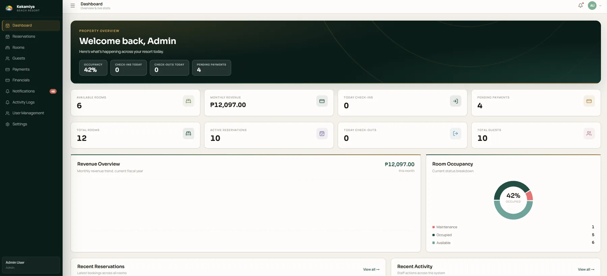
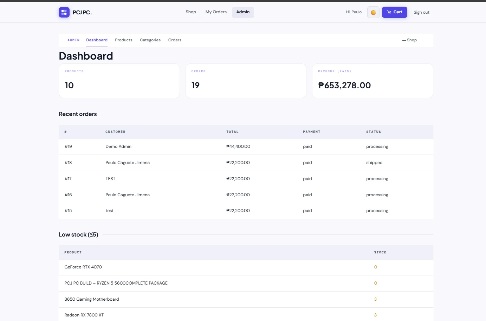
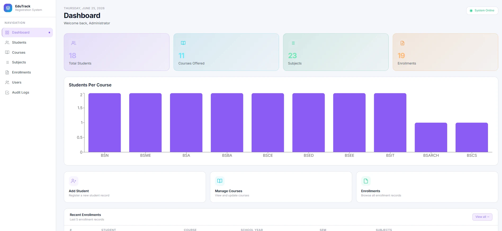
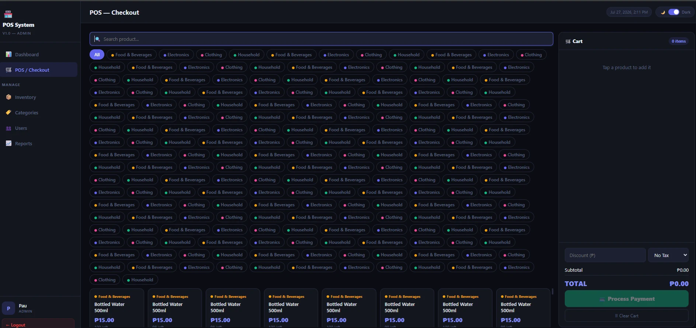
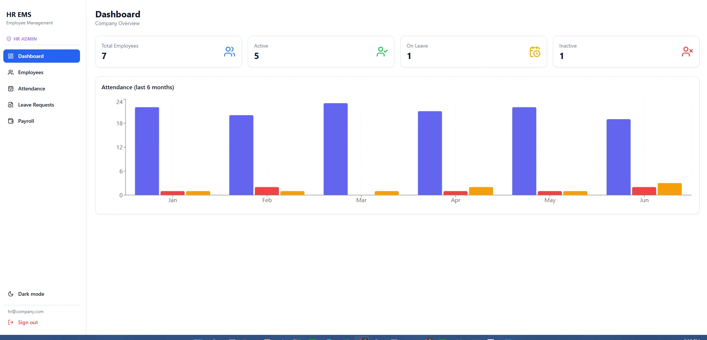

Dashboards, workflows, and management systems designed for real business operations.
Open to freelance and full-time opportunities · Philippines
Full-stack developer · business systems · database solutions
I develop reliable software for business operations and growing teams.
I’m Paulo Jimena, a full-stack developer with professional experience in enterprise and database-driven systems. I design and build responsive applications that simplify workflows, protect business data, and remain maintainable in production.
3+ YearsProfessional software development
10+ SystemsWeb and business applications
Production-ReadyDatabase, debugging, and system support

Designing dependable digital products
Specialized in modern dashboards, internal platforms, and responsive business systems built with clarity, structure, and long-term usability in mind.
Next.js✦TypeScript✦PostgreSQL✦VB.NET✦SQL Server✦Python✦React✦
Quick access
All case studies ↘Selected systems

01 · HospitalityResort ManagementReservations, rooms, payments, guests, and operational reporting.
↘

02 · CommercePC E-CommerceCatalog, inventory, checkout, payment, and order management.
↘

03 · EducationStudent ManagementStudents, courses, enrollments, users, and audit history.
↘
02
About & capabilities
Engineering clarity into every layer.
I bridge the gap between business requirements and working software—turning real operational problems into systems people can confidently use.
My professional background in insurance software shaped how I approach development: understand the workflow, trace the root cause, protect the data, and build a solution that remains maintainable after deployment.
See professional experience ↘Business Systems
Workflow-focused applications for accounting, operations, booking, HR, enrollment, and retail.
Full Stack Products
Responsive interfaces, secure application logic, APIs, authentication, and cloud deployment.
Data & Debugging
Database design, stored procedures, production issue tracing, data fixes, and performance work.
Practical Delivery
Solutions shaped around real users, clear communication, and measurable business outcomes.
0+ years
experience
experience
0+ systems
and projects
and projects
0+ technologies
used
used
0% ownership
of delivery
of delivery
03
Technical stack
Tools chosen for the problem—not the trend.
A balanced toolkit for modern web development and established enterprise systems.
Modern web
Product engineering
Next.jsReactTypeScriptTailwind CSSNode.jsREST APIs
Backend & data
Reliable foundations
PostgreSQLMS SQL ServerPythonFlaskDrizzle ORMStored Procedures
Enterprise & delivery
Production experience
VB.NETDevExpressCrystal ReportsGitVercelRender
04
Professional experience
Built in production, not only in tutorials.
Working on real insurance systems taught me to think beyond code: impact, accuracy, traceability, and user trust all matter.
View full résumé ↗Mid-Level Programmer
Moylan's Insurance
Develop and maintain accounting systems with complex business rules and calculations. Investigate production issues, perform controlled data fixes, trace root causes, and communicate directly with end users to resolve concerns.
Entry-Level Programmer
Moylan's Insurance
Supported underwriting systems, data encoding workflows, maintenance, reports, and production troubleshooting while building a strong foundation in enterprise application development.
05
Selected work
Systems designed around real workflows.
Each project explores a different operational problem—from ecommerce and reservations to education, retail, and HR.
Featured system
01
Hospitality operations
Resort Management System
A full-stack administration platform that brings reservations, room inventory, guests, payments, financial monitoring, notifications, audit trails, and role-based user management into one operating workspace.
Full-stack ecommerce
02
Commerce & inventory
PCJ PC E-Commerce
A complete PC components commerce platform with separate customer and administrator experiences—from authentication and shopping to product catalog control, stock monitoring, payment visibility, and order fulfilment.
Academic management
03
Education administration
Student Management System
An academic operations platform that centralizes student records, course and subject administration, enrollment workflows, user approvals, and activity tracking in one clean dashboard experience.

Retail operations04
Retail checkout & inventory
POS & Inventory System
A streamlined point-of-sale platform built for fast retail operations—combining checkout, live inventory control, product categories, user roles, and reporting into one efficient back-office workflow.

Human resources05
Workforce administration
HR Employee Management System
A responsive human resources platform for managing employee records, attendance history, leave approvals, and payroll summaries from a unified administrative workspace.
06
Contact
Have a system in mind?
Let’s make it work.
For development opportunities, collaborations, or custom business systems, send a message and share what you are planning.